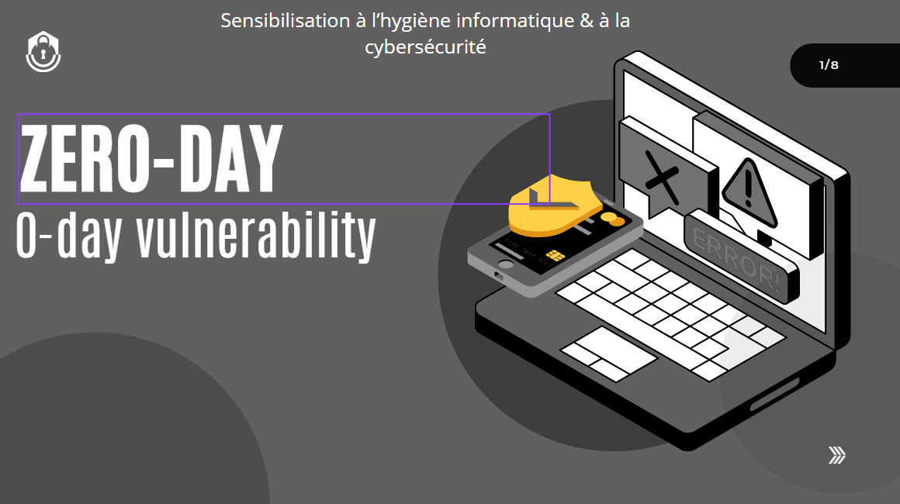
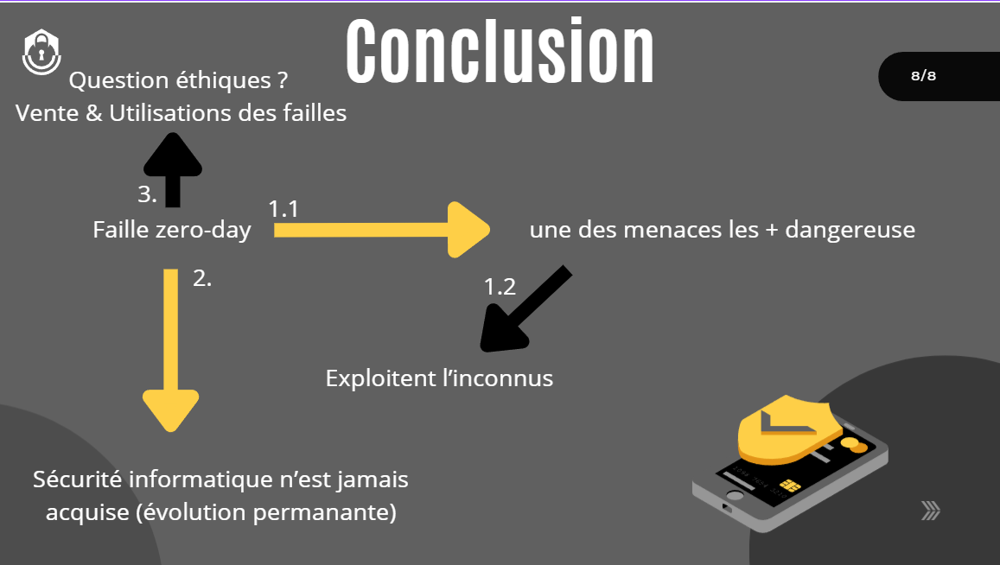
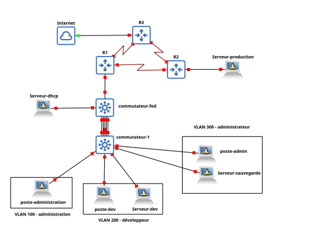
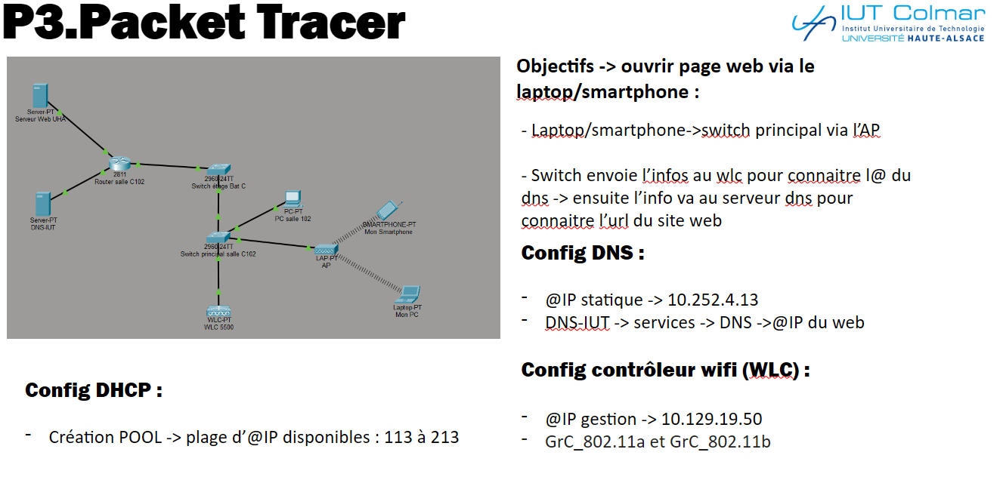
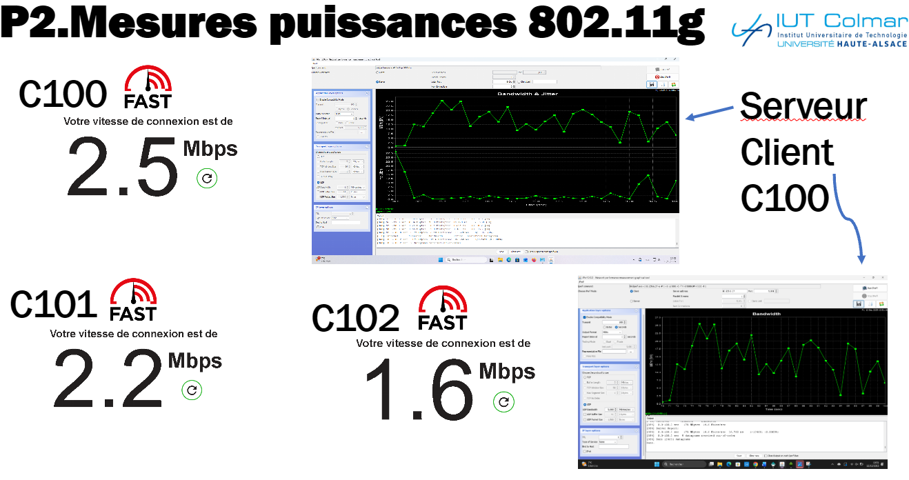
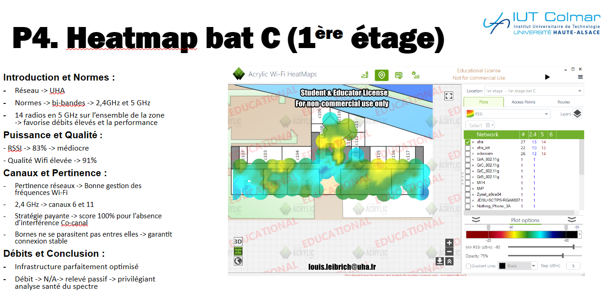
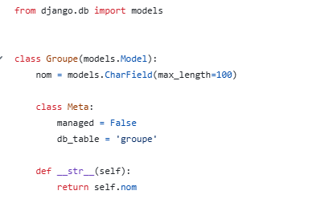
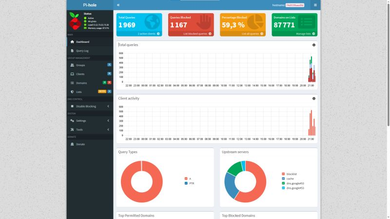

# À propos de moi
Bonjour, je m'appelle Antoine, j'ai 19 ans et je suis actuellement étudiant en BUT Réseaux et Télécommunications à l'iut de Colmar. Passionné par la cybersécurité, l'administration système / réseau, je développe mes compétences à travers ma formation et une pratique autodidacte de la cybersécurité et l'administration d'un Homelab.
# Référentiel de Compétences
Les trois compétences fondamentales du parcours, déclinées en apprentissages critiques. Cliquez sur un apprentissage pour découvrir le détail et les projets associés.
Administrer
Administrer les réseaux et l'Internet
CE1.01 choisir les solutions et technologies réseaux adaptées
↗Comparer puis sélectionner une technologie réseau pertinente selon le contexte et les contraintes.
Détail 2 projetsCE1.02 respecter les principes fondamentaux de la sécurité informatique
↗Appliquer les bonnes pratiques de sécurité : pare-feu, accès, chiffrement, segmentation.
Détail 2 projetsCE1.03 utiliser une approche rigoureuse pour la résolution des dysfonctionnements
↗Diagnostiquer une panne méthodiquement : observation, hypothèses, tests, résolution.
Détail 2 projetsCE1.04 respecter les règles métiers
↗Se conformer aux normes et conventions du domaine : adressage, nommage, documentation.
Détail 2 projetsCE1.05 assurer une veille technologique
↗Suivre les évolutions du domaine et explorer les technologies émergentes.
Détail 1 projetConnecter
Connecter les entreprises et les usagers
CE2.01 communiquer avec le client et les différents acteurs impliqués, parfois en anglais
↗Recueillir un besoin, présenter à l'oral, échanger techniquement, y compris en anglais.
Détail 1 projetCE2.02 faire preuve d'une démarche scientifique
↗Analyse par l'expérimentation, la mesure et le raisonnement structuré.
Détail 2 projetsCE2.03 choisir les solutions et technologies adaptées
↗Justifier un choix technologique répondant au besoin : coût, performance, faisabilité.
Détail 1 projetCE2.04 proposer des solutions respectueuses de l'environnement
↗Intégrer une démarche éco-responsable : sobriété, optimisation, numérique responsable.
Détail 0 projetProgrammer
Créer des outils et applications informatiques pour les R&T
CE3.01 être à l'écoute des besoins du client
↗Recueillir et formaliser un besoin avant de développer une solution sur mesure.
Détail 2 projetsCE3.02 documenter le travail réalisé
↗Produire une documentation claire : README, commentaires, guides, diagrammes.
Détail 3 projetsCE3.03 utiliser les outils numériques à bon escient
↗Maîtriser les outils (Git, IDE, conteneurs, CI/CD) au service de la qualité.
Détail 1 projetCE3.04 choisir les outils de développement adaptés
↗Justifier le choix d'un langage, framework ou bibliothèque selon le problème.
Détail 3 projetsCE3.05 intégrer les problématiques de sécurité
↗Penser la sécurité dès la conception : validation, secrets, authentification, données.
Détail 2 projets# Mes Réalisations
Projets en Formation
Sensibilisation à l'hygiène informatique et à la cybersécurité
OralHygiène informatique et menaces
Contexte : Nous avons dû étudier un sujet concernant la cybersécurité et le présenter à l'oral. Mon groupe et moi avons choisi les failles 0-days, en analysant leurs risques majeurs et la complexité de leur remédiation avant publication officielle.
Preuves & Livrables


S'initier aux réseaux informatiques
AdministrerSuccursale RTC
Contexte : En tant que technicien réseau, préparer et configurer le réseau local d'une succursale d'entreprise (société RTC) à l'aide du simulateur EVE-NG.
Travaux réalisés : Choix des équipements (commutateurs Cisco 2960, routeurs 2800), découpage en VLANs (Direction, Utilisateurs, Serveurs, Administrateur), plan d'adressage IP avec masques variables, mise en place du DHCP et du routage inter-VLAN, puis tests de connectivité.
Preuves & Livrables
Construire un réseau informatique pour une petite structure
AdministrerSAE Réseau GNS3
Contexte : Consolidation du savoir-faire sur le matériel de niveau 2 et 3, en construisant un réseau local complet sous GNS3 (réseau 192.168.32.0/20 partagé).
Travaux réalisés : Création des VLANs (administration, développeur, administrateur), VLAN natif déplacé et tagué, routage inter-VLAN, équilibrage de charge avec Spanning-tree, routage RIP v2, services (FTP, Apache, rsync), et sécurité (port-security, ACL sur les routeurs).
Preuves & Livrables

Dispositif de transmission
ConnecterCaractérisation physique des signaux
Contexte : Découverte d'un dispositif de transmission rattaché à la compétence Connecter dans le relevé de notes. Analyse approfondie des composants électroniques et physiques nécessaires au transit des données analogiques et numériques, incluant la simulation Packet Tracer et l'évaluation spectrale des débits.
Preuves & Livrables



Se présenter sur Internet
ProgrammerSite CV Responsive
Contexte : Créer une page web présentant son curriculum vitae, accompagnée d'au moins deux pages détaillant des parties du CV, le tout mis en page par un seul fichier CSS.
Travaux réalisés : Structure HTML sémantique (header, sections), présentation des compétences en flexbox, liens à ancre vers les pages de détail (formations, diplômes, expériences).
Preuves & Livrables
Mesurer et caractériser un signal ou un système
ConnecterWeb Radio Portative Stéréo
Contexte : Concevoir une web radio portable permettant d'écouter des stations internet (MP3/AAC) en stéréo, et de contrôler stations, volume, tonalité et spatialisation depuis un téléphone.
Travaux réalisés : Prise en main de la carte Adafruit HUZZAH32 (ESP32) et du codec VS1053 via le bus SPI, programmation sous l'IDE Arduino (bibliothèques Baldram, ESP32_VS1053_Stream), gestion du WiFi (WiFiManager) et pilotage à distance via le protocole MQTT et l'application IoT MQTT Panel.
Preuves & Livrables
Trauter des données
ProgrammerOutil d'Analyse de Stockage & Reporting
Contexte : Développer un outil de « reporting » pour aider un administrateur système à localiser les gros fichiers d'une arborescence et libérer de l'espace disque.
Travaux réalisés : Scripts Python (parcours récursif avec pathlib, tri par taille, export JSON), interface graphique PyQt5 (fenêtre à onglets, camembert des tailles, légendes avec cases à cocher), et génération d'un script PowerShell de suppression des fichiers sélectionnés.
Preuves & Livrables
Gestionnaire d'Absences Django
SAE 2.03De la base MySQL au déploiement Multi-VM
Conception d'une application de gestion des absences du département. Modélisation initiale de la base de données relationnelle sous MySQL, développement complet des 5 modules CRUD (Étudiants, Groupes, Enseignants, Cours, Absences) et intégration de l'interface utilisateur via des templates HTML/CSS dynamiques. Implémentation d'un système d'importation de données par fichiers CSV et d'un module de téléversement de justificatifs au format PDF. Déploiement final de l'infrastructure de production sur deux serveurs virtuels Debian 13 distincts.
Preuves & Livrables



Projets Personnels
Serveur DNS & Filtrage Local
AutodidacteSécurisation & Blocage de trackers
Déploiement en réseau domestique (Homelab) d'une instance Pi-hole virtualisée sous Debian 13 afin de filtrer la publicité et de neutraliser les requêtes télémétriques. Isolation conteneurisée à l'aide de Docker Compose, routage reverse proxy via Nginx Proxy Manager (résolutions locales en *.local) et durcissement des règles de filtrage par pare-feu UFW.
Preuves & Livrables

# Expérience Professionnelle
Stagiaire en Informatique
2021Découverte initiale du monde de l'entreprise au sein d'un service informatique. Observation active et initiation pratique aux tâches d'administration système, à la maintenance courante de postes utilisateurs et à la supervision des infrastructures réseaux physiques de la société.
# Me contacter
- 📞 Téléphone : 06 64 11 90 61
- 📧 Email : anthomann68@outlook.fr
- 💼 LinkedIn : Antoine THOMANN